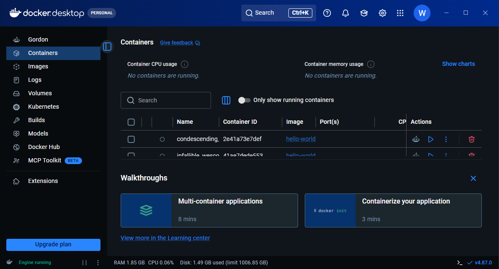
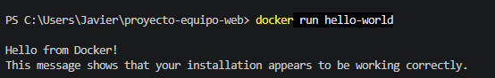

Investigación y Guía: Docker Desktop & Comandos
¿Qué es Docker Desktop?
Docker es una plataforma abierta que permite empaquetar, desplegar y ejecutar aplicaciones dentro de entornos ligeros y aislados llamados contenedores. Docker Desktop es la aplicación para entornos Windows/macOS que proporciona el motor de Docker (Docker Engine), una interfaz gráfica de gestión y la integración nativa con WSL 2 (Windows Subsystem for Linux).
1. Proceso de Instalación en Windows
- Requisitos: Windows 10/11 de 64 bits con soporte de virtualización habilitado en BIOS y backend WSL 2 activado.
- Descarga: Obtener el instalador oficial desde el sitio oficial de Docker (
docker.com/get-started). - Instalación: Ejecutar
Docker Desktop Installer.exeasegurando marcar la casilla de WSL 2 y reiniciar el equipo al finalizar.
Evidencia 1: Docker Desktop Funcionando
Estado 'Engine running' en la aplicación gráfica.

Evidencia 2: Terminal 'hello-world'
Ejecución del contenedor de prueba exitosa.

2. Comandos Principales de Docker (Requeridos por la Pauta)
A continuación se detallan los 13 comandos obligatorios del laboratorio con su sintaxis, descripción y resultado esperado:
| Comando | Sintaxis General | Descripción | Ejemplo de Uso | Resultado Esperado |
|---|---|---|---|---|
docker --version |
docker --version |
Consulta la versión instalada del cliente de Docker. | docker --version |
Imprime la versión y compilación de Docker en la terminal. |
docker run hello-world |
docker run [imagen] |
Descarga y ejecuta la imagen oficial de prueba. | docker run hello-world |
Descarga la imagen y muestra el mensaje explicativo de éxito. |
docker images |
docker images [opciones] |
Lista todas las imágenes descargadas o construidas localmente. | docker images |
Tabla con REPOSITORY, TAG, IMAGE ID, CREATED y SIZE. |
docker ps |
docker ps |
Muestra exclusivamente los contenedores que están en ejecución. | docker ps |
Lista de contenedores activos con sus puertos e IDs. |
docker ps -a |
docker ps -a |
Muestra todos los contenedores (activos y detenidos). | docker ps -a |
Historial completo de contenedores creados en el host. |
docker build |
docker build -t [nombre:tag] [contexto] |
Construye una imagen personalizada a partir de un Dockerfile. | docker build -t mi-web-html . |
Genera una nueva imagen lista para ser ejecutada. |
docker run |
docker run [opciones] [imagen] |
Crea y arranca un contenedor nuevo basado en una imagen. | docker run -d -p 8080:80 --name web mi-web-html |
Inicia el contenedor en segundo plano mapeando el puerto 8080. |
docker stop |
docker stop [ID/nombre] |
Detiene de forma segura uno o varios contenedores en ejecución. | docker stop mi-web-container |
Finaliza los procesos del contenedor sin borrar sus datos. |
docker start |
docker start [ID/nombre] |
Inicia un contenedor previamente detenido. | docker start mi-web-container |
Vuelve a levantar el contenedor conservando su configuración. |
docker rm |
docker rm [ID/nombre] |
Elimina uno o más contenedores detenidos del sistema. | docker rm mi-web-container |
Libera el nombre y espacio del contenedor en el host. |
docker rmi |
docker rmi [ID/nombre-imagen] |
Elimina una o más imágenes almacenadas localmente. | docker rmi hello-world |
Borra los layers de la imagen liberando espacio en disco. |
docker logs |
docker logs [ID/nombre] |
Muestra los registros (logs) de salida generados por un contenedor. | docker logs mi-web-container |
Imprime las peticiones HTTP y eventos del servidor. |
docker exec |
docker exec [opciones] [ID/nombre] [comando] |
Ejecuta un comando dentro de un contenedor en ejecución. | docker exec -it mi-web-container sh |
Abre una terminal interactiva dentro del contenedor activo. |